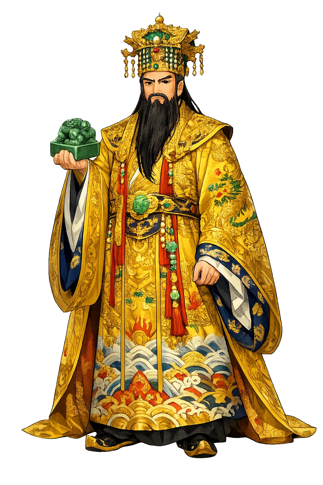
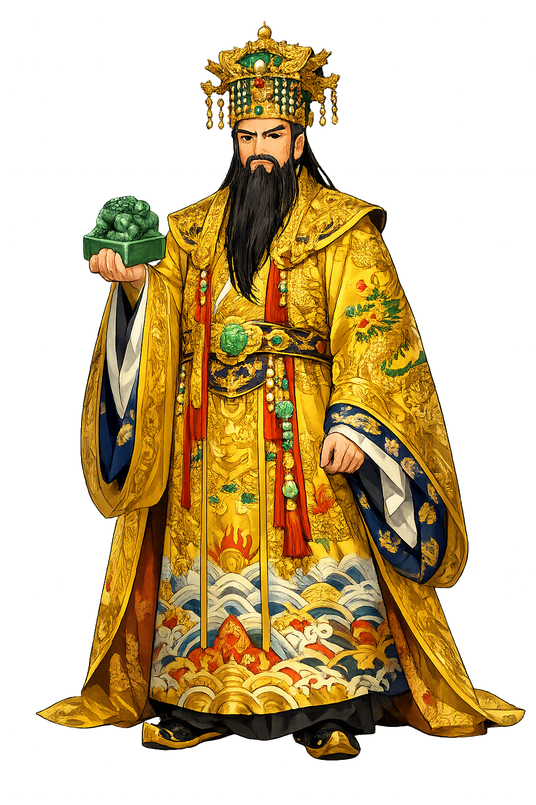

The Living Myth
Jade Emperor, Heaven, Sovereignty · Supreme ruler of the Chinese heaven

Stories of Yùhuáng
The Jade Emperor's mythology is a late, literate construction — scripture, novel, and folk tale jointly building a biography and a government for Heaven. His stories ask the great bureaucratic question: who, exactly, is in charge? The answer, assembled from the fifth century to the Ming novel, is a sovereign with a résumé, a war record, and a court that even comedy cannot overthrow.
The Daoist canon answers the obvious question — where does Heaven's emperor come from? — with a full sacred biography. The Scripture of the Jade Sovereign's Former Deeds (Gaoshang Yuhuang benxing jijing, in the Ming Daozang) tells of the childless king of the Kingdom of Wondrous Bliss, whose queen, after years of prayer to the Dao, dreams that the supreme Lord hands her an infant wrapped in radiance. The prince, grown, marvels that even his happy kingdom cannot spare him from death; he gives the throne to a worthy minister and withdraws to the mountain to cultivate the Way — through kalpas of austerity, service to prior immortals, and ordeal after ordeal, until he ascends as Yùhuáng, the Jade Sovereign of the clearest heaven.
The scripture thus gives the celestial throne a curriculum vitae: Heaven's ruler is not born but made, refined like an alchemist's elixir across ages no chronicle can hold.
The same scripture and the popular tradition that grew from it give the future emperor his proving war. While the radiant prince still rules in his father's kingdom, a demon king — lord of black clouds, master of hosts — brings plague and darkness upon the world, and the gods of the older heavens cannot end him. The prince arms himself, and in the great battle that follows his radiance alone routs the demon armies; the defeated host swears fealty, and the victor — refusing even the throne of the conquered — returns to his mountain and his cultivation. Later novels, above all the Ming Investiture of the Gods (Fengshen yanyi), pour the same pattern over heaven itself, where the mandate passes from defeated tyrants to a righteous successor.
The myth's grammar is that of every dynastic founding: the old order falls not because the gods fail, but because the throne must change hands before its holder can be seen at all.
In chapters 3–7 of the Ming novel Journey to the West, the Jade Emperor's heaven is the most vividly drawn bureaucracy in Chinese literature. When the stone-born monkey Sun Wukong arms himself in the dragon palace and erases his name from the registers of death, the celestial court debates: execute him or enroll him? He is enrolled — as Bimawen, a groom of heavenly horses — and when he discovers the rank is beneath his power, his rebellion lays open the whole military establishment: the pagoda-bearing general Li Jing, the thunder agents, the star officers all give way, until the Jade Emperor's own high ministers advise the one move left, and the Buddha comes.
The episode is comic, but its seriousness is structural: the Emperor of Heaven rules through precedent, rank, and memorial — and comedy is what happens when raw force meets paperwork that cannot imagine it.
In the oldest tellings of the Cowherd and the Weaver Girl — a love story already glimpsed in the Shijing and given its full shape in Han-dynasty lore — the lovers' separation is the work of Heaven itself; and in the later folk versions it is the Jade Emperor, the Weaver Girl's own grandfather (or the Queen Mother of the West at his side), who draws the River of Heaven between them, decreeing that magpies may span it on the seventh night of the seventh month, and only on that night. The festival of Qixi, still kept across East Asia, is the living calendar of this decree.
The myth gives the celestial sovereign his strangest office: he is the authority who separates, and the tenderness of the tale is that his separation is annually, faithfully, and by the whole bird-world, undone.
Jade Emperor, Heaven, Sovereignty
Yùhuáng, the Jade Emperor, is the sovereign of the Daoist Heaven: supreme administrator of a celestial bureaucracy of thunder-ministers, star-officers, and registrars of life and death. Canonically ranked just below the Three Pure Ones, in the practice of every household he is the Heaven that receives, files, and answers prayer.
Supreme administrator of the celestial bureaucracy — thunder, rain, plague, and the registers of life and death all report to his court.
玉 yù, 'jade' — the incorruptible stone; 皇 huáng, 'sovereign': Heaven's ruler in the substance of Heaven.
Yùhuáng restores the falling and rising tones — the tone system itself — that plain yuhuang erases.
玉皇 attested in Tao Hongjing's Zhen'gao (5th century) and enthroned by Song imperial patronage from 1012.
From the original script to the living URL
玉皇
The name in its original Chinese form. Yùhuáng (玉皇) is attested in the source tradition — “Jade Emperor”. Its acute stress marks carry the full phonetic and orthographic weight of the source tradition.
yuhuang
Reduced to plain yuhuang, the name loses everything that made it specific: acute stress marks. What remains is an ASCII string that machines can parse but that no longer speaks with its original voice.
Yùhuáng
The Unicode restoration recovers what ASCII flattened. Yùhuáng restores acute stress marks, returning the name to its original written dignity. The domain encodes to Punycode, but the browser displays the truth.
Yùhuáng.com → xn--yhung-zqa9n.com
The non-ASCII characters in Yùhuáng are encoded while the ASCII remains visible. To the DNS, it is Punycode. To humanity, it is Yùhuáng.
Owned, ideal, and ASCII forms of Yùhuáng
Yùhuáng
Restores 玉皇. The live temple domain — yùhuáng.com.
yuhuang
Flattens 玉皇. The plain ASCII fallback — what DNS and legacy systems see.
How Yùhuáng was spoken
How Yùhuáng is preserved in writing
A bespoke provenance study for Yùhuáng is being prepared by the PUNICODEX scholarly team.
Contribute scholarly provenance →What the Jade Emperor means is bureaucracy — and that is meant as praise. Chinese religion faced a question most traditions answer with mystery: if the gods are just, who administers the justice? Its answer was to imagine heaven as an empire perfected: a court with ministries, registers, promotions, and memorials, presided over by a sovereign whose paperwork is infallible even when his ministers are not. Prayer in this world is a petition; an omen, an official dispatch. The Jade Emperor is the guarantee that the cosmos is legible — that somewhere the ledger balances and the appeal will be heard. In restoring Yùhuáng with its tones, we restore a small part of that legibility: the falling tone of 玉, the rising tone of 皇 — two beats of the decree by which, for a thousand years, Chinese families ordered their heaven.
Enter Extended Lore